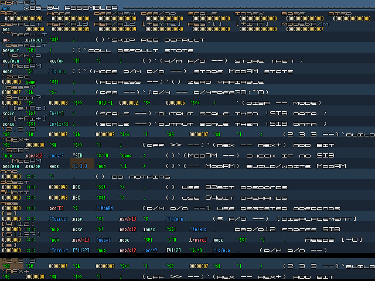

20070921 - Assembler in Atom4th

Nearly finished with writing a x86-32/64 bit assembler in the Atom4th language. The shot above shows about 50% of the code, excluding the opcode tables. In the process, I've changed a few things about the editor and fine-tuned the programming style. The final code for the assembler (which I still have to test) is nearly the same as what I had prototyped in Excel, see the screen shot from
20070910, except I've moved the assembler over to being fully compiled instead of interpreted.
Again, Why Atom4th?
The way I like to think about this is like the difference between your average bland front wheel drive car which might be able to do a one wheel burnout if you mash the gas pedal, and a raw striped down vintage road racing prototype race car.
99.99999% of people enjoy the comfort of knowing absolutely nothing about their car (after all, what the hell is a one wheel burn out anyway?), it gets good gas millage and goes from A to B. This front drive car is like C and other common languages. It is the work horse of near the entire world.
For the other 0.00001% there is the need for something different, something that requires intimate knowledge of the machine, purpose built to extract extreme performance, and yet simple enough to work on. This is the essence of vintage. To go back to simpler times, and have the freedom and access to do awesome things. Atom4th is that exotic vintage race car designed for those who get an adrenaline rush from the chest pounding 100+ decibel exhaust note and taste of ultra high octane leaded race gas.
So What's Next
Building this beast is taking longer than I expected, but with the assembler soon done, I'll be back onto the game engine, porting it to and optimizing it in Atom4th. I'm guessing the 4000 lines of C game engine code will factor out and simplify into about 32 Atom4th pages (at 32 line pairs per page). Porting the Atom4th editor into Atom4th is about 1800 lines of C code to port, so I'm going to skip that until way later, so I can get back to work on the actual game.